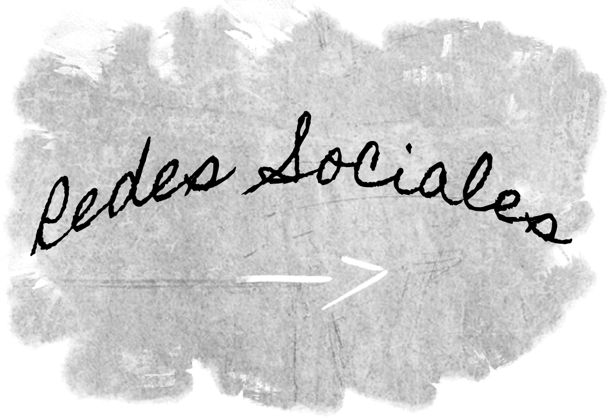

-
Estimado visitante:
¡Te doy la bienvenida! Estás invitado a curiosear y conocer el contenido de este proyecto a través del recorrido de tu mouse.
Centro de Orientación Educacional
Material e información
-
Material recopilado de estudio
Descarga aquí
-
Material de anteproyecto
Descarga aquí

-
Anaís Valdés
Bitácora
Un modelo estructural | Primer acercamiento
El proyecto base nace desde un estudio de un sistema estructural que luego se va adaptando a requerimientos tales como lo es el predio o los factores climáticos.
Se compone de un sistema doble viga perimetral y pilar continuo para transmitir las cargas verticales, además de marcos arriostrados con un entramado diagonal para rigidizar las esquinas, diseñado con tablas de 2 x 6”, para obtener una planta libre.
Posee cuatro niveles dejando el cuarto como una cubierta habitable. Su alzado principal se diferencia de los demás al tener los 2 pilares centrales los suficientemente abiertos para generar una entrada, mientras que los otros 3 mantienen su igualdad estructural.
Marco arriostrado

Circulación
Circulación | Orden estructural
En la fachada este y oeste se generan aberturas verticales en el cerramiento para así acusar donde se ubican las escaleras.
En el alzado norte se intenciona el cerramiento en la estructura y en el sur, al ser la fachada principal, se despeja de cerramiento el nivel 1, generando 2 entradas, una directa a las escaleras y su circulación y otra directo al espacio dentro de ese nivel, manteniendo así su estructura.
Sendero que abre la Geografía
Circuito Peatonal
El edificio se emplaza en un punto de convergencia entre el eje longitudinal generado por el Estero Piduco y el encuentro transversal del Río Claro, funcionando como un articulador y haciendose parte de este eje. También, se convierte en un polo el cual atrae y conecta las zonas de viviendas separadas por condominios y sitios eriazos.
Gracias a su proximidad con el centro, la estructura funciona como una extensión de los centros educativos dentro de las áreas de influencia, articulando programas vocacionales, de orientacion y apoyo a la educación tales como:
Talleres de Decisión Vocacional y Proyecto de Vida, Planificación de Metas, Taller Vínculos y Relaciones Interpersonales tales como:
Responsbilidad social, insercion social y trabajo con la comunidad.
Además de Charlas vocacionales con invitados de universidades cercanas
Propuesta programática | Organigrama
En un aula de educación media se aceptan un máximo de 45 estudiantes por aula, siendo 1,5 m2 /alumno, en cambio en talleres o salas de computación se requieren 2 m2 por estudiante.
Es por esto que para los cálculo de áreas se tomó un máximo de 23 alumnos por recinto, debido a que al ser talleres se requieren de una menor asistencia de personas pero con un constante flujo de rotación gracias a los horarios de los programas.
-

Establecimientos Educacionales cercanos:
-Universidad Autonoma
-Universidad Santo Tomás
-Instituto Superior de Comercio Enrique Maldonado
-Liceo Diego Portales
-Liceo Industrial Superior Talca
-Liceo Ignacio Carrera Pinto
-Colegio de La Salle
-Colegio San Jorge
-Colegio San Ignacio
-Colegio Integrado San Pio X
Galería
Planimetría
-

Emplazamiento
Relación edificio - entornoSe toman en consideración las cualidades de los estratos en el lugar para dar una partida al proyecto, sumandole a esta la orientación que genera múltiples relaciones visuales con el entorno y que facilita la conectividad y el ingreso de residentes y estudiantes.
Además, debido a esta orientación se plantean los cerramientos en el edificio, por ejemplo, el cierre del lado poniente debido al sol. -
Plantas
Nivel -1 y 1
-
Plantas
Nivel 2 y 3 -
Plantas
Nivel 4 y 5
Secciones
-
Secciones
A - A'Desde esta sección se puede entender de mejor forma como la circulación se arraiga al emplazamiento y articula dando forma al proyecto.
-
Secciones
B - B'El edificio demarca zonas de esparcimiento y socialización, como lo es el anfiteatro creado gracias a la pendiente y la demarcación de los estratos en conjunto al edificio..
Fotomontajes
-
Exterior
Imagen de ProyectoCreación a partir de 3 imagenes:
Lineas
Sombras Naturales
Sombras directas del sol -

Interior
Imagen de ProyectoCreación a partir de 2 programas:
Revit
Photoshop